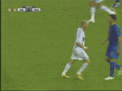

On this page, I used HTML to create the structure, to make a header, nav, main and footer. I created a title saying "My first website" and then added a picture behind it using divs and styles. I also added little gifs to the main page by using folder/ image.jpg, once I did that I worked on all of the outside like the two colums, margin and padding, link list which is just adjusting all of the links together. Hi, my name is Diego Garcia. I’m a student at El Camino High School, and I’m passionate about soccer, music, and especially graphic design, branding, and web design. I enjoy learning about marketing because it helps me connect creativity with real-world ideas. A lot of my inspiration comes from nature, sunsets, food, and the simple things in life. Whether I’m working late on a new project or out on the soccer field, I’m always looking for ways to grow and express myself through creativity.
About Me
My name is Diego Garcia, I am a web designer located in oceanside, CA. I also enjoy graphic designing and create affortable makerting tools for local buisneses.
Read More
Favorite Things
I really enjoy spending time playing soccer and have lots of fun playing my friends and even hanging out with them. Also I tak a lot of time working out at my local gym.
Read More
Contact Me
You can easily reach out to me through my contact form or email to start a conversation about your needs. I’d be happy to discuss my offerings in detail and explore pricing options that fit what you’re looking for.
Read more